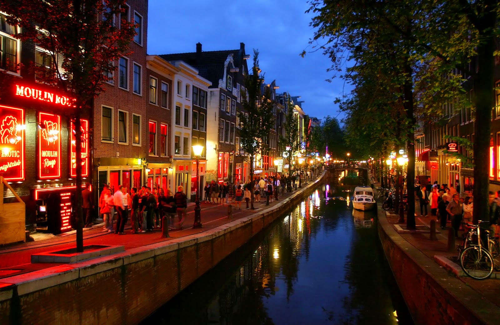
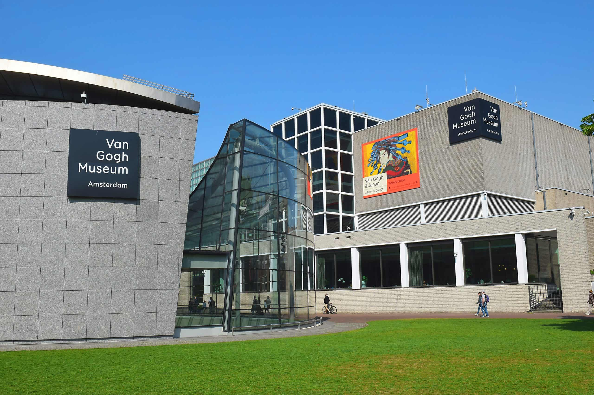
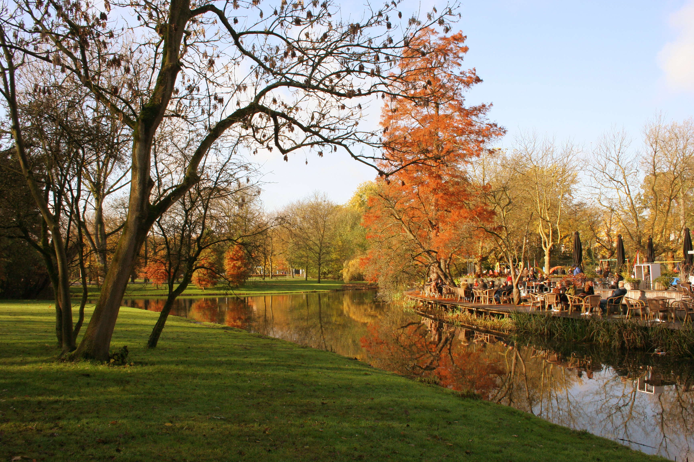

Pontos Turísticos
Red Light District
O Red Light District, conhecido em holandês como "De Wallen," é um dos pontos turísticos mais famosos e polêmicos de Amsterdã, na Holanda. Localizado no coração da cidade, é conhecido principalmente pela presença de vitrines onde profissionais do sexo trabalham, oferecendo seus serviços de forma legal e regulamentada. Esse distrito reflete a abordagem liberal e aberta da Holanda em relação ao trabalho sexual, que é uma profissão regulamentada no país desde 2000.
Museu Van Gogh
O Museu Van Gogh (em neerlandês: Van Gogh Museum) é um museu de arte localizado no município de Amsterdã, na província de Holanda do Norte nos Países Baixos. O museu é responsável pela preservação, conservação e difusão da obra do pintor holandês Vincent van Gogh. Situa-se na Praça dos Museus, próximo do Stedelijk Museum e do Rijksmuseum, na zona sul de Amsterdã.
Parque Vondelpark
O Parque Vondelpark é um dos parques mais conhecidos em Amsterdã. A Holanda é famosa por ter lindos parques com uma bela área verde e o Vondelpark é um deles. O local tem um grande lago na área central e é onde os moradores da cidade costumam ir para descansar, caminhar e deitar na grama para aproveitar um pouco o Sol.
